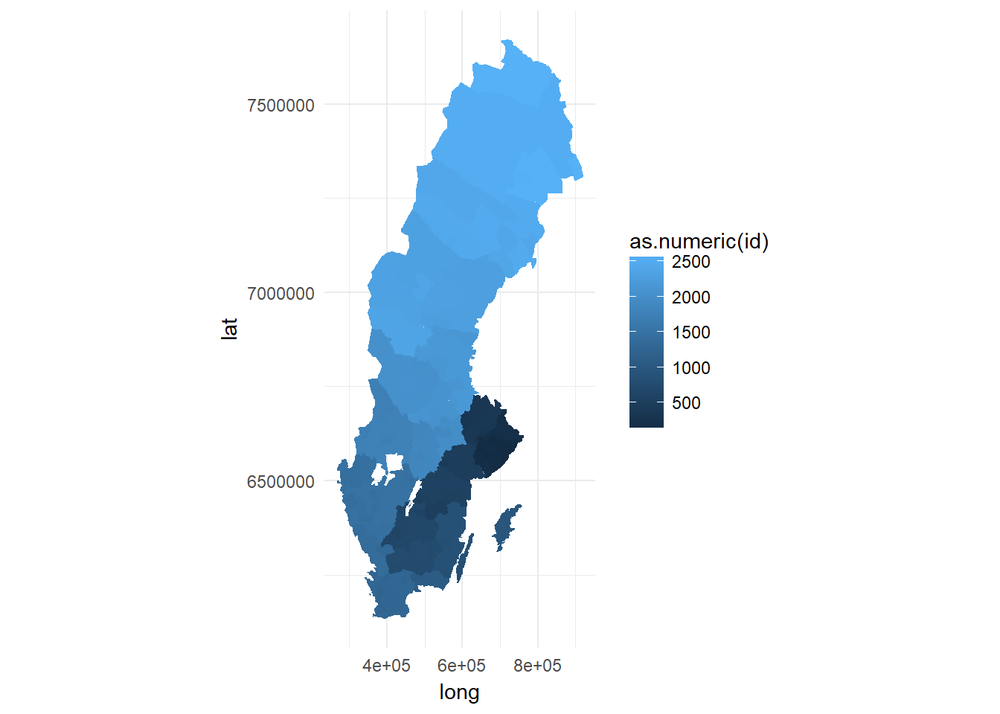

En korpletkarta (ENG: choroplet) är en karta där regioner är färglagda efter värdet på en tillhörande variabel. I denna uppgift skall ni skapa en funktion som plottar koropletkartor färglagda efter nyckeltal från Kommun- och Landstingsdatabasen (Kolada).
En tabell med sveriges kommungränser i polygonformat finns på https://github.com/MT5013-VT18/HW_data som kommun_karta.csv. Ladda ner denna och placera i ett underbibliotek data till ditt Homework-repo. En titt på filens innehåll ger
kommun_karta <- read_csv("data/kommun_karta.csv")
glimpse(kommun_karta)## Observations: 632,251
## Variables: 7
## $ long <dbl> 661116.3, 661171.5, 661182.7, 661198.9, 661205.9, 661210...
## $ lat <dbl> 6606615, 6606604, 6606605, 6606606, 6606605, 6606594, 66...
## $ order <int> 1, 2, 3, 4, 5, 6, 7, 8, 9, 10, 11, 12, 13, 14, 15, 16, 1...
## $ hole <lgl> FALSE, FALSE, FALSE, FALSE, FALSE, FALSE, FALSE, FALSE, ...
## $ piece <int> 1, 1, 1, 1, 1, 1, 1, 1, 1, 1, 1, 1, 1, 1, 1, 1, 1, 1, 1,...
## $ id <chr> "0114", "0114", "0114", "0114", "0114", "0114", "0114", ...
## $ group <chr> "0114.1", "0114.1", "0114.1", "0114.1", "0114.1", "0114....Här ger long/lat polygonernas hörn, order anger i vilken ordning det skall dras linjer mellan hörnen, hole anger om polygonen är ett hål (en sjö), piece anger ordningstal om en kommun består av flera polygoner, id är kommunens nummer och group en sammanslagning av piece och order.
En karta, här förenkelhetens skull färglagd efter kommunnummer (fill = as.numeric(id)), fås nu genom
ggplot(kommun_karta, aes(x = long, y = lat, group = group, fill = as.numeric(id))) +
geom_polygon() +
coord_fixed() +
theme_minimal()
Ta gärna bort stödlinjer och skalor på axlarna med hjälp av theme då de inte fyller någon större funktion här.
Skriv en funktion
plot_koroplet(kpi, year = 2017, karta = kommun_karta){
...
}som givet nyckeltal (kpi), t.ex. "U09401" (Nöjd Medborgarindex - Kultur), och år plottar en koropletkarta över sveriges kommuner färglagt efter nyckeltalet. Du kan begränsa dig till kommunerna i ett givet län om du tycker det går trögt att plotta hela landet.
Nyckeltalets värden skall funktionen hämta från Koladas API. Demonstrera att funktionen fungerar.
Skriv en funktion
repertoar <- function(year){
...
}som returnerar en tabell med Dramatens uppsättningar ett givet år (kolumner Uppsättning, Premiärdatum, Regissör, Scen). Uppsättningarna för t.ex. invigningsåret 1908 fås genom att skrapa tabellen på http://www.dramaten.se/medverkande/rollboken/?category=date&query=1908. Undersök sidkällan eller använd SelectorGadget för att identifiera lämpliga parametervärden att skicka till html_nodes.